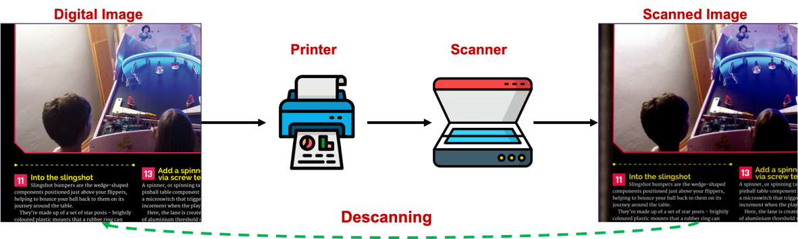
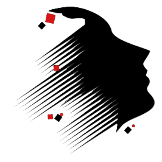

Overview
DESCAN-18K is a dataset for the descanning task: recovering the original digital image from a real scanned page. This dataset supports that task with large-scale real scanned/original pairs collected from real scanners and original digital pages.
DESCAN-18K's key characteristics:
- Real paired data: each
scan/cleanpair comes from a real scanned page and its corresponding original digital page - New task setting: the work explicitly defines descanning as its own restoration problem
- Cross-scanner evaluation: the test set uses scanner models not seen during training
- Mixed degradations: color distortion, bleed-through, halftone, texture distortion, and scanner noise often co-occur
- Scale:
18,360aligned pairs across four real-world scanners - Format: RGB TIFF images at
1024 x 1024 - Content diversity: photographs, graphics, layouts, and text-heavy magazine pages
| Folder | Contents |
|---|---|
scan/ |
Real scanned page image (model input) |
clean/ |
Corresponding original digital page image (target) |
The core dataset consists of real scanned/original pairs. Synthetic data appears only as an
additional training augmentation strategy for the DescanDiffusion+ model variant.

Descanning Process Overview
The figure below shows the descanning process: a digital image is printed, scanned, and then restored back toward its original digital form through descanning.

Dataset Statistics
The table below follows the paper split sizes for this dataset publication.
| Split | Scanners | Pairs |
|---|---|---|
| Train | scanner3, scanner4 | 17,640 |
| Valid | scanner3, scanner4 | 360 |
| Test | scanner1, scanner2 | 360 |
| Total | - | 18,360 |
Scanner IDs
| ID | Scanner Model | Split |
|---|---|---|
| scanner1 | Fuji Xerox ApeosPort C2060 | Test only |
| scanner2 | Canon imagePRESS C650 | Test only |
| scanner3 | Canon imageRUNNER ADVANCE 6265 | Train / Valid |
| scanner4 | Plustek OpticBook 4800 | Train / Valid |
Training and validation use scanner3 and scanner4. The test set uses
scanner1 and scanner2, which are unseen during training.
Data Structure
DESCAN-18K-dataset/ |-- Train/ | |-- scan/ # real scanned page images used as model inputs | `-- clean/ # aligned original digital target images |-- Valid/ | |-- scan/ # validation scanned images | `-- clean/ # validation original targets |-- Test/ | |-- scan/ # unseen-scanner scanned images for evaluation | `-- clean/ # corresponding original targets `-- README.md
Each file in scan/ has a same-named counterpart in clean/.
| Path | Role |
|---|---|
Train/scan |
Degraded real scanned inputs for training |
Train/clean |
Paired original digital targets for training |
Valid/scan |
Scanned validation inputs |
Valid/clean |
Paired validation targets |
Test/scan |
Scanned test inputs from unseen scanners |
Test/clean |
Paired test targets |
File Naming
| Split | Convention | Example |
|---|---|---|
Train/ |
Source-document style | BookOfMaking.00001.01.tif |
Valid/ |
Scanner-based | scanner03_000.tif |
Test/ |
Scanner-based | scanner01_000.tif |
All images are stored as TIFF files (.tif).
Source and Construction
DESCAN-18K was built from 11 magazine types from the Raspberry Pi Foundation, licensed under
CC BY-NC-SA 3.0. The pages contain diverse image and text content and had preservation durations
ranging from a few days to seven years.
The construction pipeline is as follows:
- Magazine pages were manually scanned with four scanner models.
- Corresponding original PDF pages were collected online.
- Both scanned and original data were converted to RGB TIFF.
- Page pairs were aligned with AKAZE registration.
- Poor matches were manually filtered.
- The aligned pages were randomly cropped to
1024 x 1024. - The cropped pairs were registered again with AKAZE to secure aligned patch pairs.
Scanned TIFF images were calibrated under the IT 8.7 / ISO 12641 standard.
Degradation Types
DESCAN-18K includes six representative degradation types that often appear in combination:
| # | Degradation | Description |
|---|---|---|
| 1 | Color transition | Global color fading, saturation change, or altered color tone |
| 2 | External noise | Dots or localized stains caused by foreign substances |
| 3 | Internal noise | Scanner-generated crumpled, curved, or laser-like artifacts |
| 4 | Bleed-through effect | Back-page contents becoming visible in the scan |
| 5 | Texture distortion | Global physical textures or wrinkle-like artifacts |
| 6 | Halftone pattern | Printing-induced CMYK dot structures |
Intended Use
DESCAN-18K is intended for paired descanning research and evaluation:
- Input: scanned image from
scan/ - Target: original image from
clean/
It can be used for developing, benchmarking, and analyzing methods that recover original digital images from real scanned pages. The scanner-based split is especially useful for evaluating generalization to unseen scanner types.
Reported Benchmark Results
The following results are reported in Table 1 for the original DESCAN-18K testing set.
| Method | PSNR (dB) | SSIM | LPIPS | FID |
|---|---|---|---|---|
| Pix2PixHD | 20.58 | 0.8014 | 0.057 | 18.30 |
| CycleGAN | 21.52 | 0.8417 | 0.050 | 16.99 |
| HDRUNet | 20.90 | 0.8480 | 0.055 | 16.42 |
| Restormer | 20.37 | 0.7915 | 0.152 | 25.57 |
| ESDNet | 21.22 | 0.8418 | 0.088 | 15.24 |
| NAFNet | 22.03 | 0.8538 | 0.048 | 16.00 |
| OPR* | 18.09 | 0.7249 | 0.158 | 21.45 |
| DPS* | 17.93 | 0.7354 | 0.150 | 41.64 |
| Clear Scan | 21.46 | 0.8183 | 0.054 | 18.09 |
| Adobe Scan | 15.80 | 0.6153 | 0.141 | 23.55 |
| Microsoft Lens | 20.48 | 0.8013 | 0.056 | 18.97 |
| DescanDiffusion | 23.40 | 0.8717 | 0.042 | 13.51 |
| DescanDiffusion+ | 23.43 | 0.8736 | 0.044 | 14.60 |
* Methods with an asterisk are official pre-trained versions used by the authors.
Citation
If you use DESCAN-18K in your research, please cite:
@article{cha2024descanning,
title={Descanning: From Scanned to the Original Images with a Color Correction Diffusion Model},
author={Cha, Junghun and Haider, Ali and Yang, Seoyun and Jin, Hoeyeong and Yang, Subin
and Uddin, AFM and Kim, Jaehyoung and Kim, Soo Ye and Bae, Sung-Ho},
journal={arXiv preprint arXiv:2402.05350},
year={2024}
}
References
| Resource | Link |
|---|---|
| Paper | https://arxiv.org/abs/2402.05350 |
| Code | https://github.com/jhcha08/Descanning |
| Lab | https://mlvc.khu.ac.kr/ |

Efficient Neural Computing Lab (ENC Lab), School of Computing, Kyung Hee University.
License and Redistribution Note
The source magazine material comes from the Raspberry Pi Foundation and is licensed under CC BY-NC-SA 3.0.
Before public release, make sure the final repository or hosting page includes the exact redistribution terms, attribution requirements, and any usage restrictions that apply to this dataset package.